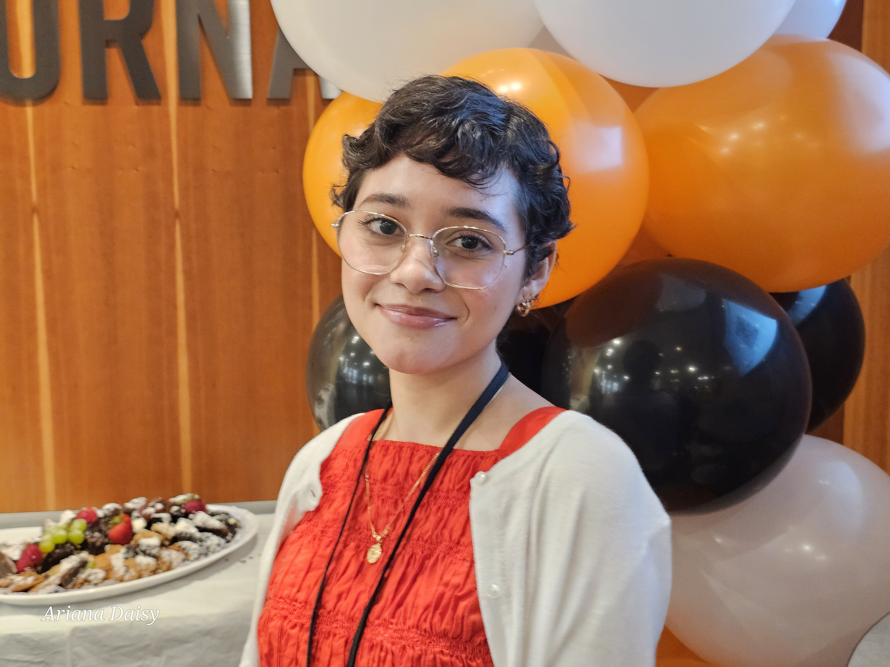

Introducing Ariana Santiago

I am a 25-year-old student journalist with strong interests in aviation, politics and history/science.
I find myself being drawn to photojournalism and hope to find an internship that allows me to focus on that.
These are my top 3 favorite journalism stories:
- On Their Merit: The First American Women to Fly in Combat I like this article because the images and hearing from the women and their accomplishments only inspire me more. It blends all of my interests together and I can only hope to achieve the same in terms of writing, photography skills, getting to meet amazing people, and be around aviation and space in any capacity.
- Twelve Minutes and a Life This article envoked a lot of emotions in me when I first read it. I think splitting between the past and leading up to how Ahmaud Arbery died, was brilliantly done.
- The World According to Bad Bunny I loved that the reporter got to not only feel as if she were in Bad Bunny's circle, but she also sheds light on the issues and concerns in Puerto Rico. I also love that she gives a deeper insight into Bad Bunny and his experiences growing up, as well as consistently throwing in particular things that reminds me of my own family.